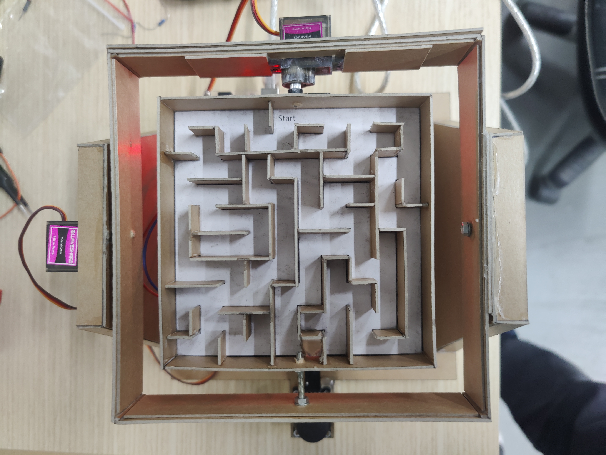
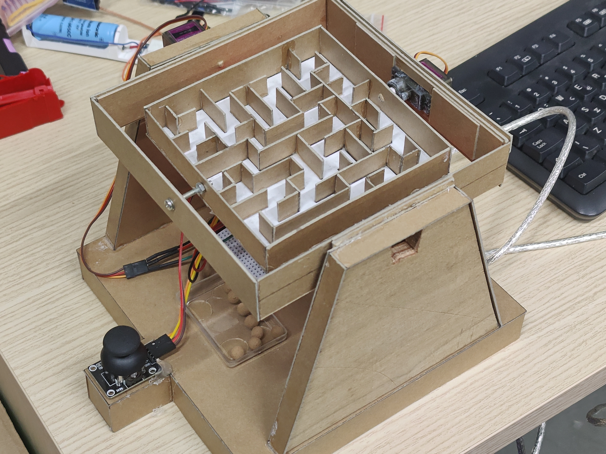
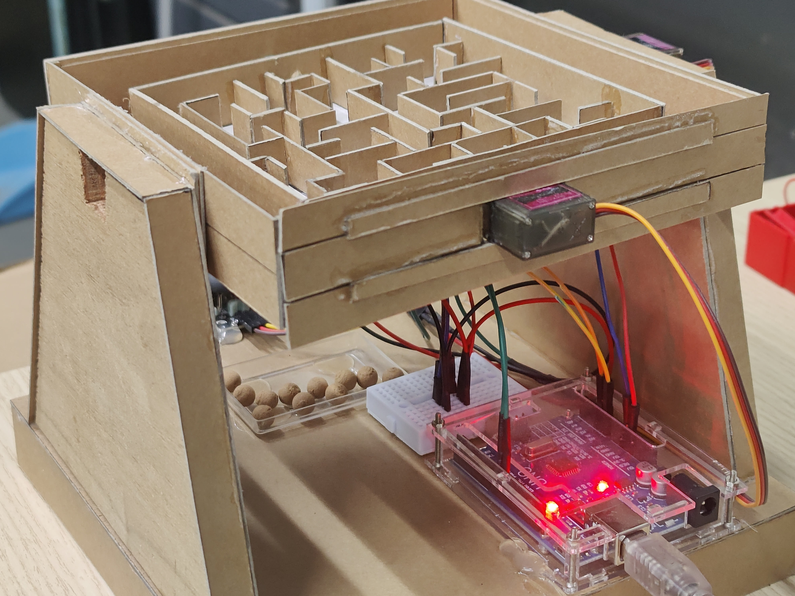

08. Gravity Maze 2 Αξόνων
Διαδραστικός λαβύρινθος με μηχανισμό δύο αξόνων, όπου ο χρήστης χειρίζεται την κλίση της πλατφόρμας με joystick και οδηγεί τη μπίλια με ομαλή, ελεγχόμενη κίνηση.
Περιγραφή
Το project υλοποιεί ένα gimbal σύστημα δύο αξόνων που στηρίζει έναν χειροποίητο λαβύρινθο. Η πλατφόρμα ελέγχεται από joystick και μεταφράζει την κίνηση του χρήστη σε γωνίες κλίσης μέσω δύο servo motors.
Ολοκλήρωση της κατασκευής στον Σύλλογο Τεχνολογίας Θράκης
Ομάδα Κατασκευής: Κοσμίδης Θ., Δημήτρης Κ., Γιάννης Γ.
Α. Λειτουργίες λογισμικού
- Dynamic easing και slew-rate για πιο φυσική αίσθηση κίνησης
- Exponential mapping για καλύτερο έλεγχο κοντά στο κέντρο του joystick
- Low-pass filtering και δειγματοληψία πολλών μετρήσεων για μείωση jitter
- Αυτόματο calibration του joystick κατά την εκκίνηση
- Αυτόματο detach των servo μετά από αδράνεια για λιγότερο θόρυβο
Β. Υλικά
- Arduino Nano ή Arduino Uno
- 2x Servo motors, όπως SG90 ή MG90S
- 1x Analog joystick module δύο αξόνων
- Χοντρό χαρτόνι Kraft 800g/m² για το πλαίσιο και τον λαβύρινθο
- Jumper wires και τροφοδοσία μέσω USB
Γ. Συνδεσμολογία
- D8 → Signal του Servo X
- D9 → Signal του Servo Y
- A0 → VRx του joystick
- A1 → VRy του joystick
- 5V → VCC τροφοδοσίας
- GND → Κοινή γείωση συστήματος
Δ. Οδηγίες χρήσης
- Κατά την εκκίνηση αφήστε το joystick στο κέντρο για σωστό calibration
- Η πλατφόρμα ακολουθεί την κίνηση του joystick με μέγιστη κλίση περίπου ±20°
- Μετά από 2 δευτερόλεπτα ακινησίας τα servo απενεργοποιούνται προσωρινά
Ε. Εκπαιδευτική αξία
Η κατασκευή είναι πολύ καλή εισαγωγή σε motion control, αναλογικές εισόδους, φιλτράρισμα σήματος και μετατροπή δεδομένων αισθητήρων σε φυσική κίνηση με πιο ποιοτική εμπειρία χειρισμού.
ΣΤ. Credits
Η αρχική ιδέα βασίστηκε στο Arduino Marble Maze Labyrinth του Ahmed Azouz, ενώ ο επανασχεδιασμός του κώδικα και η βελτίωση της κατασκευής έγιναν από την ομάδα του Συλλόγου Τεχνολογίας Θράκης.
Φωτογραφίες


